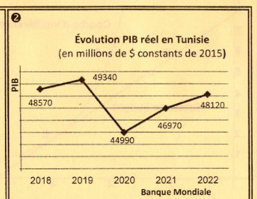
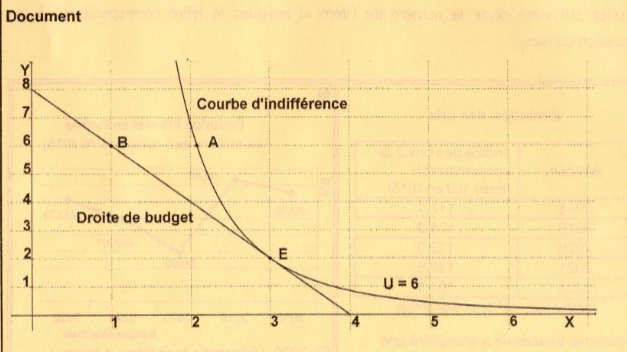

Économie
Bac 2024 – Session Principale
Épreuve officielle simulée — Section Économie & Gestion
Clique sur chaque verbe pour comprendre ce qu'attend le correcteur.
📌 Recommandations officielles
- ✅ Lire attentivement chaque question.
- ✅ Pour la dissertation : dégager la problématique.
- ✅ Utiliser les documents fournis.
- ✅ Présenter les calculs sur la copie.
- ✅ Soigner la présentation et l'écriture.
Ce que tu dois savoir
Notions ciblées pour cette épreuve uniquement
L'inflation est une hausse généralisée et durable des prix. La déflation est une baisse généralisée des prix (taux d'inflation négatif). La désinflation est un ralentissement du rythme de l'inflation : le taux reste positif mais diminue.
• Inflation : taux positif et en hausse
• Désinflation : taux positif mais en baisse
• Déflation : taux négatif
Une récession est une baisse du PIB réel sur au moins deux trimestres consécutifs. Le taux de croissance du PIB devient négatif.
• Expansion : hausse du PIB (TCA > 0)
• Crise : point de retournement
• Récession : baisse du PIB (TCA < 0)
• Dépression : récession prolongée et sévère
Une courbe d'isoquant représente l'ensemble des combinaisons de facteurs de production (L, K) qui permettent de produire une même quantité Q.
1. Poser Q = constante
2. Isoler K en fonction de L
Le développement durable (DD) repose sur 3 piliers : économique, social, environnemental. Pour l'apprécier, on combine l'IDH (progrès socio-économique) et l'empreinte écologique (durabilité environnementale).
• IDH : santé (espérance de vie), éducation, revenu
• Empreinte écologique : pression humaine sur l'environnement
• IDH + Empreinte = vision complète du DD
Le Taux Marginal de Substitution (TMS) mesure la quantité de bien Y que le consommateur accepte de céder pour obtenir une unité supplémentaire de bien X, tout en maintenant le même niveau de satisfaction.
• TMS = Umx / Umy
• À l'équilibre : TMS = Px / Py
• Contrainte : R = x·Px + y·Py
Les facteurs de production sont le travail (L) et le capital (K). La FBCF (Formation Brute de Capital Fixe) mesure l'investissement. L'accroissement de ces facteurs est une source majeure de croissance économique.
• Hausse population active → capacité de production
• Hausse durée de travail → production + salaires
🧠 Effets du capital (K) :
• FBCF → capacités productives + externalités
• Effet multiplicateur : ΔY = k × ΔI
Ministère de l'Éducation
EXAMEN DU BACCALAURÉAT
[ ][ ][ ][ ][ ][ ][ ][ ]
Reportez sur votre copie le numéro de l'item et indiquez la lettre correspondante à la proposition correcte.
Item 1 : Évolution des prix
| Années | Indice des prix à la consommation (Base 100 en 2015) |
|---|---|
| 2018 | 117,1 |
| 2019 | 125,0 |
| 2020 | 132,0 |
| 2021 | 139,6 |
| 2022 | 151,1 |
Institut National de la Statistique
L'économie tunisienne a enregistré une désinflation en :
Justification : La désinflation se caractérise par une hausse des prix à un rythme ralenti. C'est le cas de la Tunisie en 2020 puisque le taux d'inflation baisse de 1,14 point tout en restant positif en passant de 6,74 % en 2019 à 5,60 % en 2020.
| Année | 2018 | 2019 | 2020 | 2021 | 2022 |
|---|---|---|---|---|---|
| IPC (base 100 en 2015) | 117,1 | 125,0 | 132,0 | 139,6 | 151,1 |
| Taux d'inflation (%) | - | 6,74 | 5,60 | 5,75 | 8,23 |
Taux d'inflation 2019 = ________ %. Taux 2020 = ________ %. → désinflation en ________.
Item 2 : Évolution PIB réel en Tunisie (en millions de $ constants de 2015)

Banque Mondiale
En 2020, l'économie tunisienne a connu :
Justification : En Tunisie, le PIB réel baisse en passant de 49 340 M$ en 2019 à 44 990 M$ en 2020 soit une baisse de 8,81 % (taux de croissance du PIB négatif).
Baisse du PIB de ________ % → TCA ________ → ________.
Item 3 : La fonction de production de l'entreprise « Farha » est : Q(L,K) = 6 L1/4 K3/4. Pour un niveau de production 6 unités, l'équation de l'isoquant est :
Justification : Le niveau de production est de 6 unités, c'est-à-dire Q(L,K) = 6 L1/4 K3/4 = 6. Donc K3/4 = 1/L1/4 → K = 1/L1/3.
K3/4 = 1/L________ → K = 1/L________.
Item 4 : Pour apprécier le développement durable, on se réfère à :
Justification : L'IDH se limite à apprécier les progrès socio-économiques réalisés dans un pays et l'empreinte écologique permet d'apprécier la durabilité environnementale.
DD = ________ + ________.
Item 2 : c — Une récession. PIB réel baisse de 8,81 % (TCA négatif).
Item 3 : d — K = 1/L1/3. 6 L1/4 K3/4 = 6 → K3/4 = 1/L1/4 → K = 1/L1/3.
Item 4 : c — IDH + empreinte écologique.

1- Donnez la signification économique des points A et B.
• Point A : panier procurant un niveau de satisfaction égal à ________, situé ________ de la droite de budget → ________ à Julia.
• Point B : panier ________ à Julia (situé sur la droite de budget) mais procurant un niveau de satisfaction ________ à 6.
2- Retrouvez analytiquement le panier d'équilibre de Julia. U(x,y) = A x3/4 y1/4 avec A = 23/4 43/4.
TMS = Umx/Umy = 3y/x. À l'équilibre : TMS = Px/Py = 80/40 = ________ → y = 2x/3.
80x + 40(2x/3) = 320 → x* = ________ abonnements, y* = ________ abonnements.
2- TMS = 3y/x = 2 → y = 2x/3. 80x + 40(2x/3) = 320 → x* = 3, y* = 2. Panier (3 ; 2).
3- Supposons que le tarif de l'abonnement sur la plateforme tunisienne passe de 80 DT à 120 DT, toutes choses étant égales par ailleurs. Déterminez le nouveau panier optimal de Julia. Que constatez-vous ?
TMS = 3y/x = 120/40 = ________ → y = ________.
120x + 40x = 320 → x* = ________, y* = ________. Panier (2 ; 2).
Constatation : Suite à l'augmentation du prix de l'abonnement tunisien, Julia consomme ________ d'abonnements tunisiens (2 au lieu de 3).
4- En se comportant citoyen, Julia décide de garder constant le nombre d'abonnements sur la plateforme tunisienne malgré la hausse de leur prix.
a. Budget nécessaire : R = (3×120) + (2×40) = ________ DT.
b. Effets socio-économiques : soutenir le produit ________ → survie des entreprises → création d'________ + recettes ________ pour l'État.

4- a. R = (3×120)+(2×40) = 440 DT. b. Soutien produit national, survie entreprises, création d'emplois, recettes fiscales.
| Années | PIB (en millions de dinars) | Population active (en personnes) | FBCF (en millions de dinars) |
|---|---|---|---|
| 2018 | 112 985,5 | 4 204 927 | 22 146,1 |
| 2019 | 122 969,3 | 4 240 590 | 23 898,7 |
| 2020 | 119 502,1 | 4 066 606 | 18 935,8 |
| 2021 | 130 815,4 | 4 164 773 | 20 857,6 |
| 2022 | 138 415,7 | 4 247 339 | 22 787,2 |
Institut National de la Statistique et Banque Mondiale.
Document 2 : L'investissement reste une variable stratégique. Sur la longue période seuls les pays ayant massivement investi ont atteint et maintenu le niveau de production industrielle et le niveau de vie des pays développés. Si on analyse l'évolution à long terme de l'économie mondiale, on constate une forte corrélation entre pourcentage des investissements dans le PIB et le taux de croissance économique [...]. L'investissement joue un rôle dynamique sur la production. Celui-ci engendre des vagues successives de revenus qui se traduisent par des dépenses de consommation nouvelles qui inciteront les entreprises à accroître leur production et engendreront de nouvelles vagues de revenus [...]. L'accroissement des investissements publics est un moyen d'accroître la production et l'emploi.
J. Brémond - A. Gélédan, Dictionnaire des théories et mécanismes économiques, Hatier, octobre 1984.
La ________, en tant que phénomène d'accroissement des richesses créées sur la longue période, provient de diverses sources.
Problématique : Comment l'accroissement des ________ constitue-t-il une source de croissance économique ?
Plan : Nous montrerons que l'augmentation de la quantité de ________ constitue une source d'accroissement des richesses, et que l'accumulation du ________ favorise la croissance économique.
La hausse de la ________ mobilise un plus grand nombre d'actifs et fournit une capacité de ________ additionnelle. L'accroissement de la durée de travail accroît la production et les ________, donc le pouvoir d'achat et la consommation.
L'accumulation du capital (via la FBCF) accroît les capacités productives et génère des effets d'________ et des ________. L'investissement génère des revenus additionnels par son effet ________ et améliore la compétitivité.
Synthèse : La croissance économique provient de l'augmentation de la quantité des ________.
Ouverture : Comment l'amélioration de l'________ des facteurs de production constitue-t-elle une autre source de croissance économique ?
Partie I — L'augmentation de la quantité de travail (3,5 pts) : Hausse de la population active occupée → capacité de production additionnelle + demande. Accroissement de la durée de travail → production + salaires + consommation.
Partie II — L'accumulation du capital (3,5 pts) : FBCF → capacités productives + effets d'entraînement + externalités positives. L'investissement génère des revenus par l'effet multiplicateur et améliore la compétitivité.
Conclusion (1 pt) : La croissance provient de l'augmentation des facteurs de production. Ouverture : rôle de l'efficacité des facteurs ?
• Développement : 7 pts
• Structuration : 1 pt
• Conclusion : 1 pt
• Présentation : 0,5 pt
Item 1 : Désinflation en :
Item 2 : PIB réel 2020 :
Item 3 : Q=6L1/4K3/4=6 → K = ?
Item 4 : Apprécier le DD :